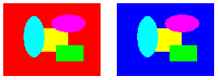

Remapping is the process of converting the colors in an image according to a color remap table. The color remap table is an array of ColorMap structures. Each ColorMap structure in the array has an oldColor member and a newColor member.
When GDI+ draws an image, each pixel of the image is compared to the array of old colors. If a pixel's color matches an old color, its color is changed to the corresponding new color. The colors are changed only for rendering — the color values of the image itself (stored in an Image or Bitmap object) are not changed.
To draw a remapped image, initialize an array of ColorMap structures. Pass the address of that array to the ImageAttributes::SetRemapTable method of an ImageAttributes object, and then pass the address of the ImageAttributes object to the DrawImage Methods method of a Graphics object.
The following example creates an Image object from the file RemapInput.bmp. The code creates a color remap table that consists of a single ColorMap structure. The oldColor member of the ColorMap structure is red, and the newColor member is blue. The image is drawn once without remapping and once with remapping. The remapping process changes all the red pixels to blue.
Image image(L"RemapInput.bmp");
ImageAttributes imageAttributes;
UINT width = image.GetWidth();
UINT height = image.GetHeight();
ColorMap colorMap[1];
colorMap[0].oldColor = Color(255, 255, 0, 0); // opaque red
colorMap[0].newColor = Color(255, 0, 0, 255); // opaque blue
imageAttributes.SetRemapTable(1, colorMap, ColorAdjustTypeBitmap);
graphics.DrawImage(&image, 10, 10, width, height);
graphics.DrawImage(
&image,
Rect(150, 10, width, height), // destination rectangle
0, 0, // upper-left corner of source rectangle
width, // width of source rectangle
height, // height of source rectangle
UnitPixel,
&imageAttributes);
The following illustration shows the original image on the left and the remapped image on the right.

Â
Â